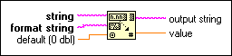

Scan Value Function
Owning Palette: String/Number Conversion Functions
Requires: Base Development System
Converts characters at the beginning of string to the data type represented by default, according to the conversion codes in format string, and returns the converted number in value and the remainder of string after the match in output string.
The connector pane displays the default data types for this polymorphic function.

 Add to the block diagram Add to the block diagram |
 Find on the palette Find on the palette |